Des projets concrets
au service des territoires
Stations d’épuration, réservoirs, réseaux, continuité écologique, voiries : une sélection de projets menés pour les collectivités du grand Sud-Ouest et du centre de la France.
Voir les références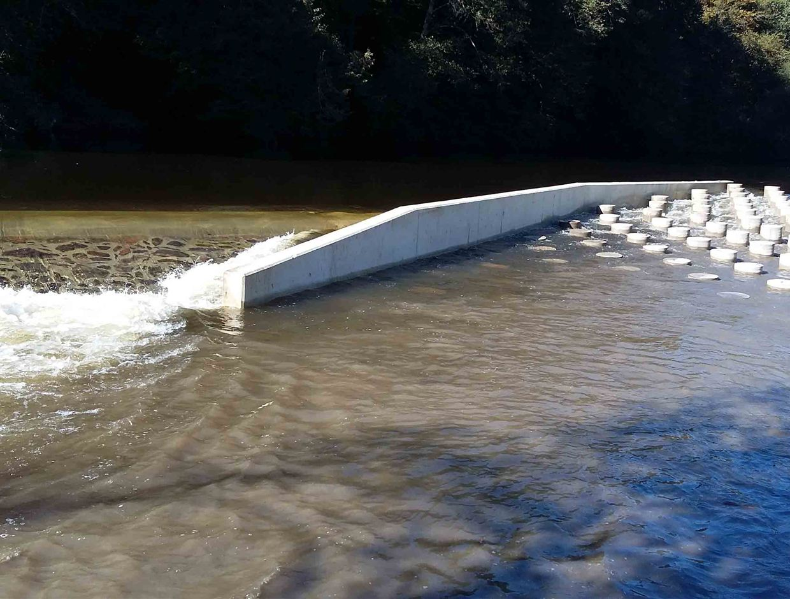
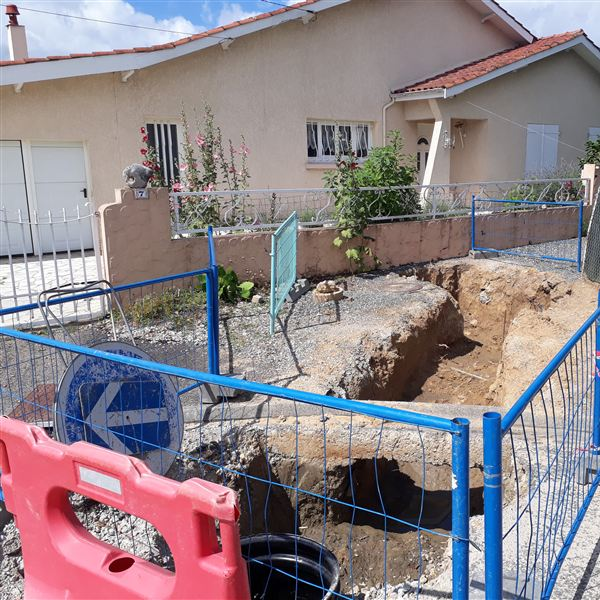
Nos références
17 références
-
 Assainissement
Assainissement
Station d’épuration à filtres plantés de roseaux
Saint-Mexant (19) · 2018
Remplacement de l’ancien lagunage par une station à filtres plantés de roseaux et mise en conformité de 18 raccordements.
- Maîtrise d’œuvre complète
- Tulle Agglo
- 571 264 € HT
-
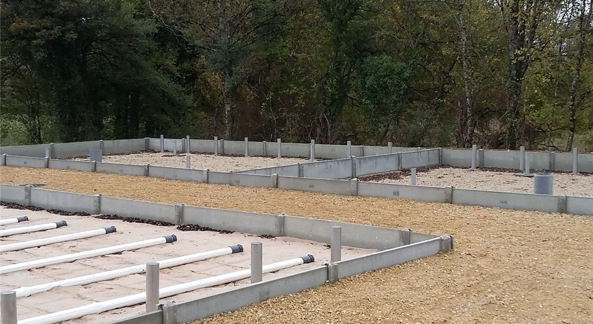
AssainissementStation d’épuration de Turenne Gare
Turenne (19) · 2018
Station à filtres plantés de roseaux de 166 EH, construite en zone inondable, avec dossier loi sur l’eau.
- Maîtrise d’œuvre complète
- CA du Bassin de Brive
- 344 557 € HT
-
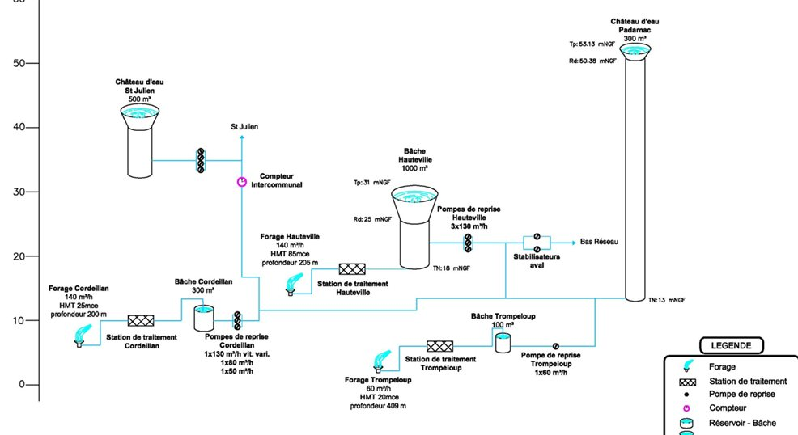
Eau potableÉtude des eaux rouges du réseau
Pauillac (33) · 2018-2019
Recherche des causes de turbidité et programme d’actions : reminéralisation, renouvellement de réseau, purges automatiques.
- Étude
- Commune de Pauillac
-
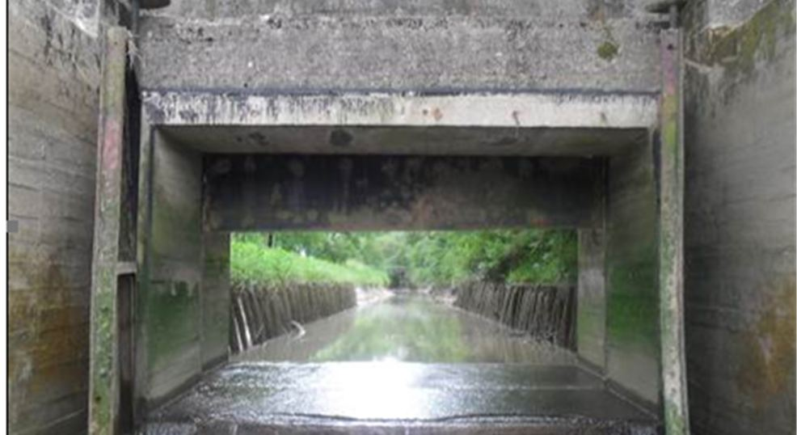
Milieux aquatiquesContinuité écologique des ouvrages du Bernu
Estuaire de la Gironde (33) · 2018-2019
Remplacement des portes à flots et des vannes des ouvrages de Bernu et Bourgogne, en zone soumise aux marées.
- Maîtrise d’œuvre (ACT à AOR)
- CdC de l’Estuaire
- 73 390 € HT
-
 Eau potable
Eau potable
Réservoir d’eau potable de 500 m³
Vallée de l’Isle (24) · 2017-2018
Réservoir semi-enterré et réseaux d’alimentation et de distribution, avec permis de construire et autorisation de défrichement.
- Maîtrise d’œuvre complète
- SMDE 24
- 476 322 € HT
-
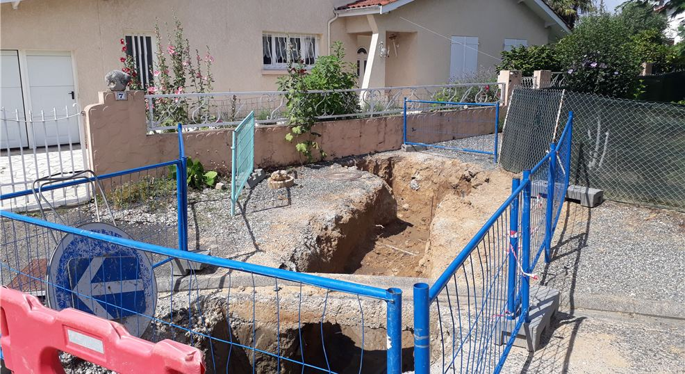
AssainissementMise en séparatif du secteur Vergne
Carignan-de-Bordeaux (33) · 2017-2018
960 m de canalisations, 49 branchements et 26 regards pour séparer eaux usées et eaux pluviales.
- Maîtrise d’œuvre complète
- SIEA des Portes de l’Entre-Deux-Mers
- 473 000 € HT
-
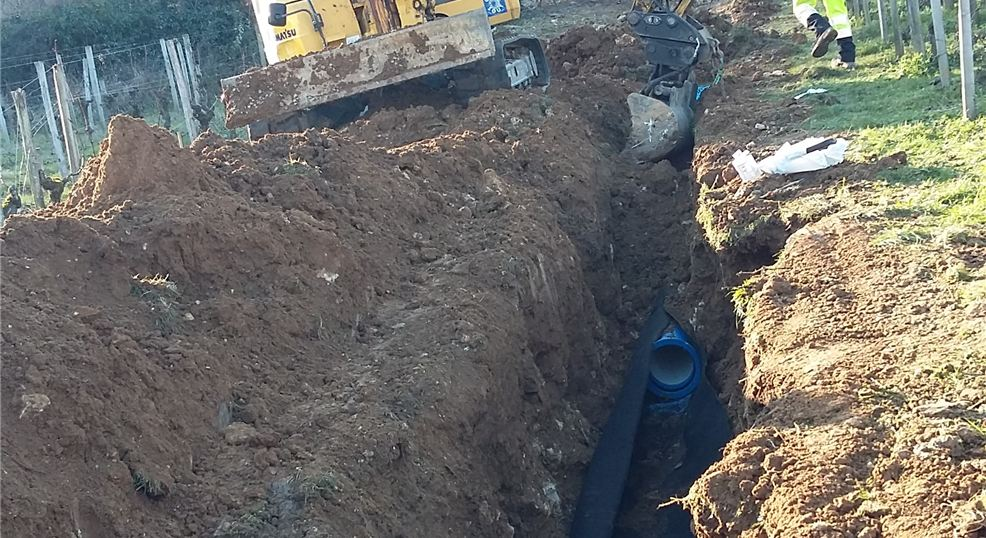
Eau potableRenouvellement de la conduite de Mondot
Saint-Émilion (33) · 2015-2017
2 766 m de conduite en fonte DN 250 entre la station des Barbannes et le réservoir de Mondot.
- Maîtrise d’œuvre complète
- SIEA de l’Est du Libournais
- 500 000 € HT
-
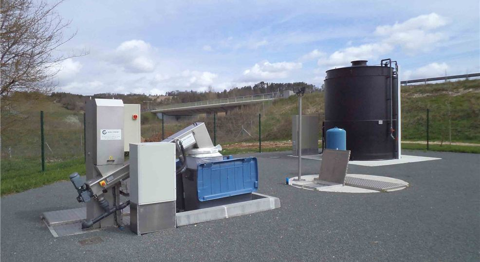
AssainissementTransfert des eaux usées de Coursac
Grand Périgueux (24) · 2011-2014
Collecteurs, refoulements, deux postes de relèvement et traversée de l’Isle par forage dirigé.
- Maîtrise d’œuvre complète
- CA du Grand Périgueux
-
 Eau potable
Eau potable
Unité de production d’eau potable
Nonards et Brivezac (19) · 2013-2015
Restructuration de la ressource et de l’usine de production, pour une capacité de 550 m³/h.
- Maîtrise d’œuvre (AVP à AOR)
- BBM Eau
- 7 092 000 € HT
-
 Assainissement
Assainissement
Station d’épuration de Saint-Céré
Saint-Céré (46) · 2013-2014
Nouvelle station de 11 000 équivalents-habitants, avec traitement des boues et aménagement paysager.
- Maîtrise d’œuvre complète
- 3 516 000 € HT
-
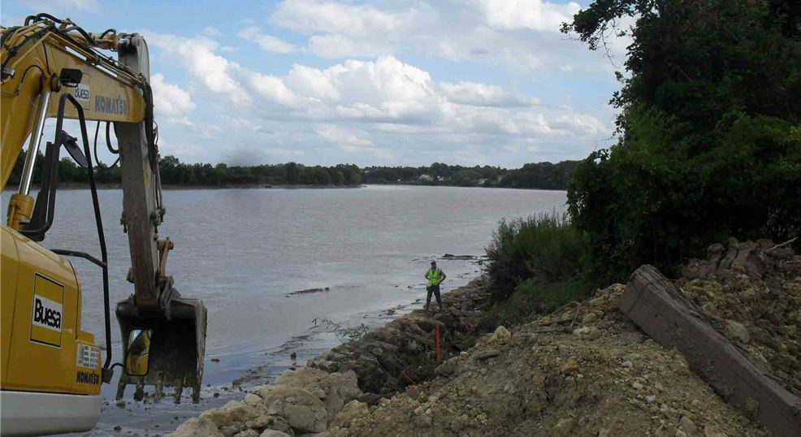
Milieux aquatiquesProtection des berges de la Dordogne
Vayres (33) · 2012
Enrochements calcaires et techniques végétales pour stabiliser les rives en amont du port.
- Maîtrise d’œuvre complète
- ASA de Vayres
-
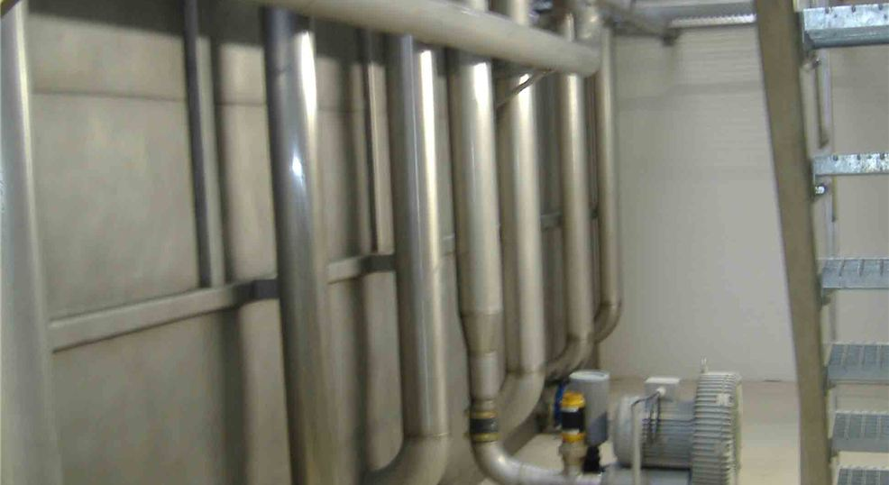
Eau potableUnité de reminéralisation
Châteauneuf-la-Forêt (87) · 2003-2006
Filtration sur calcaire marin au réservoir du Cimetière, pour une capacité de 36 m³/h.
- Maîtrise d’œuvre complète
-
 Paysages & VRD
Paysages & VRD
Aménagement urbain de voirie
Montignac (24)
Voirie et espaces publics pour créer un axe urbain d’accès au centre d’art pariétal Montignac-Lascaux.
- Maîtrise d’œuvre complète
- Commune de Montignac
-
 Milieux aquatiques
Milieux aquatiques
Passe à poissons de la digue des Carderies
Uzerche (19) · 2014-2016
Passe naturelle pour rétablir la continuité écologique de la Vézère.
- Maîtrise d’œuvre complète
-
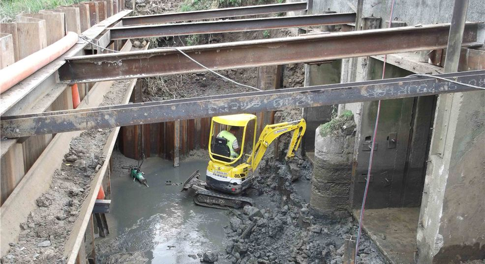
Milieux aquatiquesPortes à flots du Despartins
Despartins (33) · 2013-2014
Batardeau, radier en béton et remplacement des quatre portes à flots et de leurs mécanismes.
- Maîtrise d’œuvre complète
- SM des bassins versants de l’Artigue et de la Maqueline
-
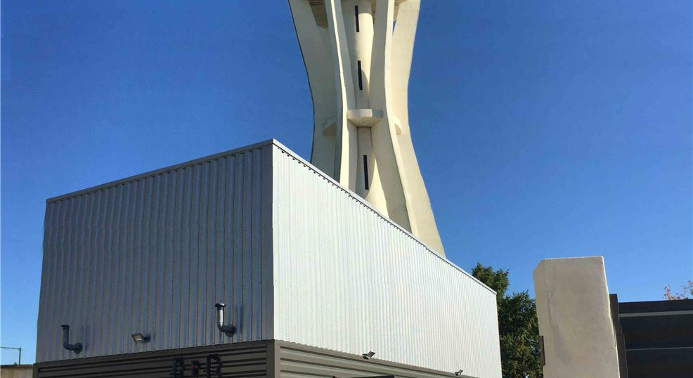
Eau potableTraitement des fluorures sur alumine activée
Margaux (33) · 2015-2016
Dispositif d’élimination des fluorures par alumine activée sur le forage de Margaux.
- Maîtrise d’œuvre complète
- SIEA Arsac Cantenac Margaux Soussans
-
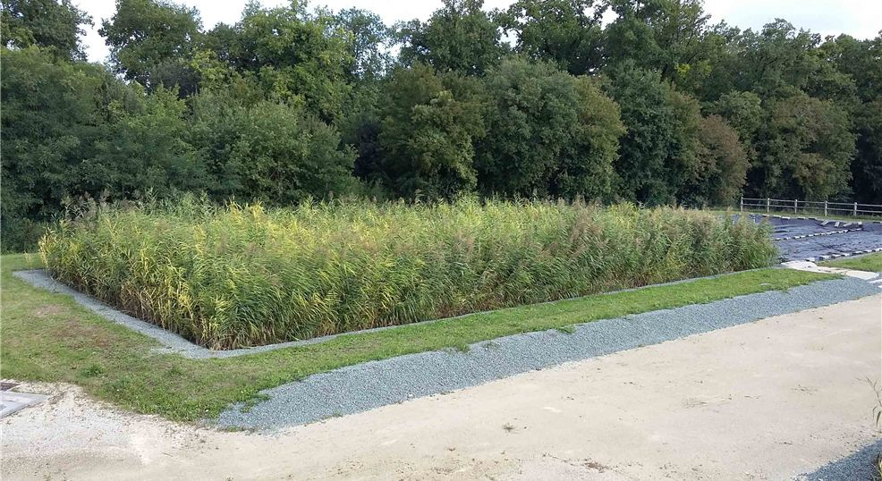
AssainissementAssainissement de Saint-Sulpice-d’Arnoult
Saint-Sulpice-d’Arnoult (17) · 2008-2014
Réseau, postes de refoulement et station à filtres plantés de roseaux.
- Maîtrise d’œuvre complète
- Syndicat des Eaux de la Charente-Maritime